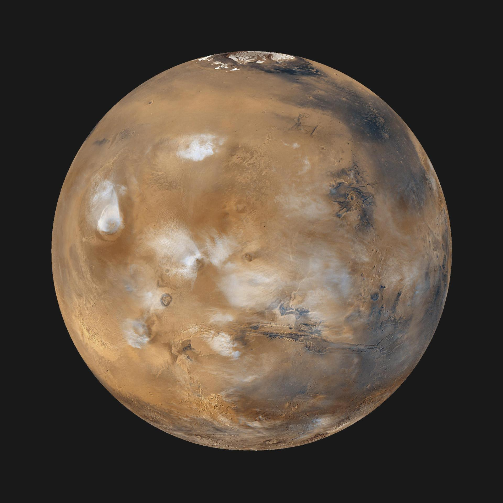

ÓRBITAMARTE
El cuarto planeta desde el Sol, conocido como el planeta rojo por el óxido de hierro de su suelo. Alberga el volcán más grande del sistema solar y casquetes polares de hielo
Diametro
6.792 kmGravedad
3,73 m/s²Duracion del dia
24.65 horasTemperatura media
-65 °C